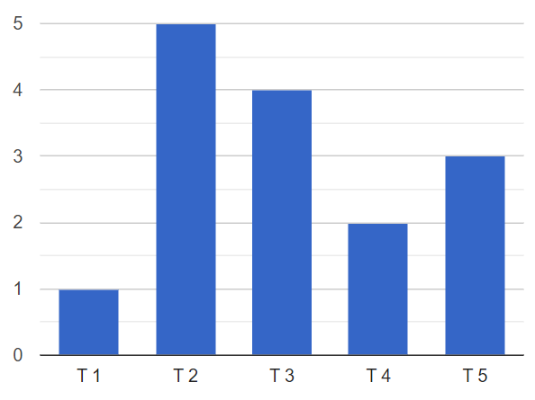
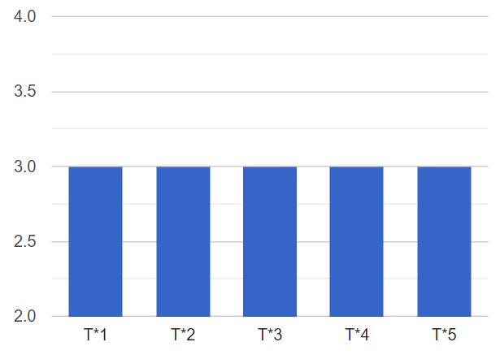
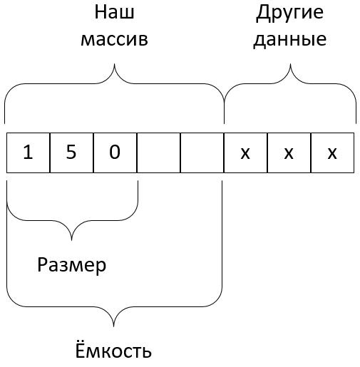
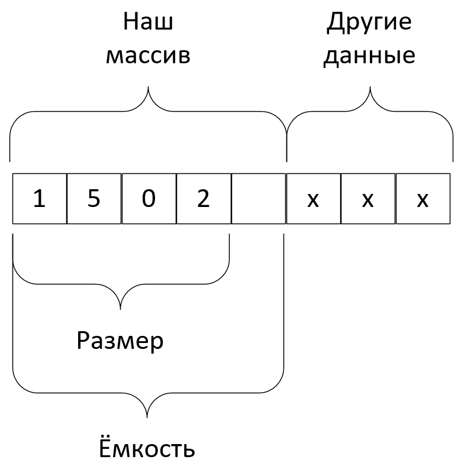
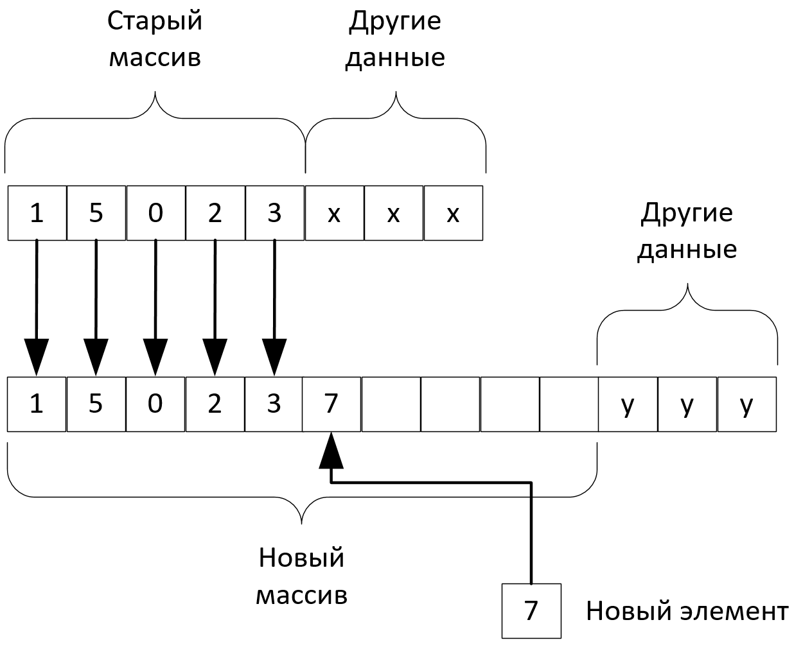
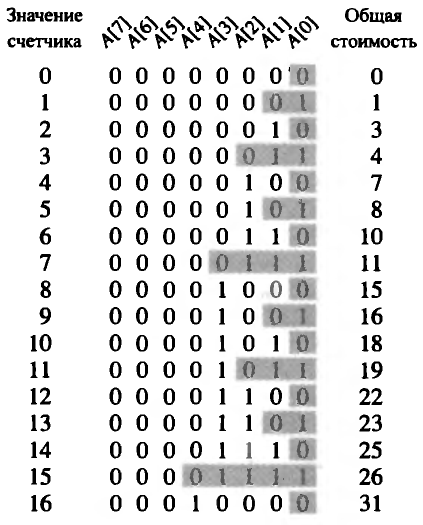

$N$ элементарных вставок: $\sum_{i = 1}^{N}O(1) = O(N)$
$\lfloor log_2N \rfloor$ расширений: $$\sum_{j = 1}^{\lfloor log_2N \rfloor}2^j = \frac{2(2^{log_2N} - 1)}{2 - 1} = 2N - 2 = O(N)$$
| i | op | result | charge | $C_i$ | $\Delta B$ | $B$ | ||
| 0 | append(6) |
|
1 | 2 | -1 | -1 |
| i | op | result | charge | $C_i$ | $\Delta B$ | $B$ | ||||
| 0 | append(6) |
|
2 | 2 | - | 0 | ||||
| 1 | append(2) |
|
2 | 3 | -1 | -1 |
| i | op | result | charge | $C_i$ | $\Delta B$ | $B$ | ||||||||||||||||
| 0 | append(6) |
|
3 | 2 | +1 | 1 | ||||||||||||||||
| 1 | append(2) |
|
3 | 2 | - | 1 | ||||||||||||||||
| 2 | append(8) |
|
3 | 1 | +2 | 3 | ||||||||||||||||
| 3 | append(1) |
|
3 | 5 | -2 | 1 | ||||||||||||||||
| 4 | append(3) |
|
3 | 1 | +2 | 3 | ||||||||||||||||
| 5 | append(4) |
|
3 | 1 | +2 | 5 | ||||||||||||||||
| 6 | append(7) |
|
3 | 1 | +2 | 7 | ||||||||||||||||
| 7 | append(2) |
|
3 | 9 | -6 | 1 | ||||||||||||||||
| ... | ... | ... | ... | ... | ... | ... | ||||||||||||||||
| ... | ... | ... | ... | ... | ... | ... | ||||||||||||||||
| ... | ... | ... | ... | ... | ... | ... |

def increment(A):
i = 0
while i < len(A) and A[i]==1:
A[i] = 0
i += 1
if i < len(A):
A[i] = 1